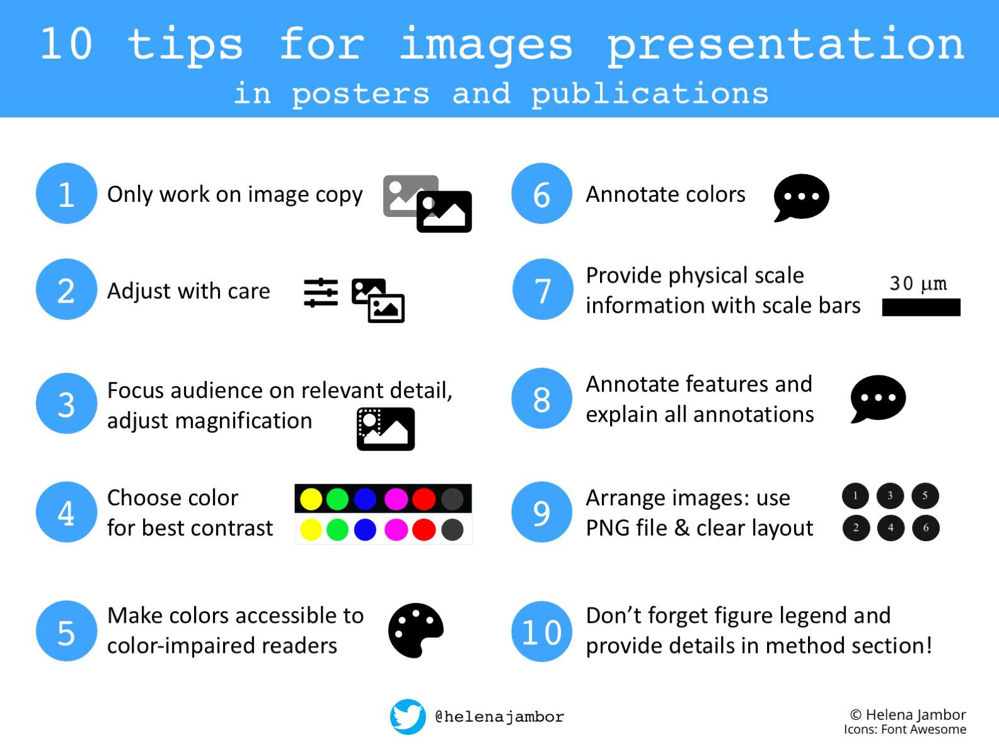
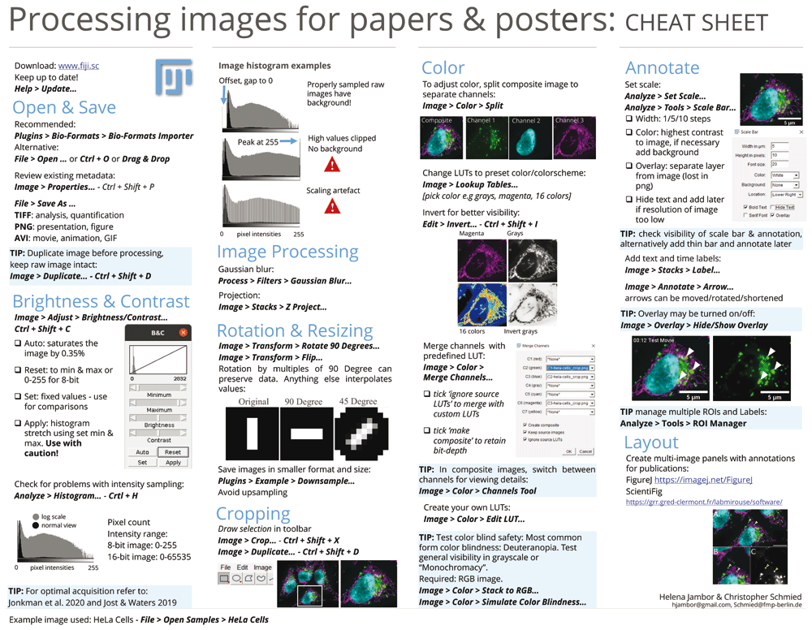

顕微鏡画像の提示#
基本事項#
科学論文ではしばしば、特定の結論を説明するために顕微鏡画像が示されます。定性的な結論は定量的な比較の代用にはなりませんが（次項参照）、画像は私たちの推論や結論形成を方向づけるうえで有用です。正しく確実な結論を導くために、いくつかの原則があります。
{kind=link}

画像のトリミング・向き・サイズの調整
画像を調整する場合は、必ずコピーを作成し、元のファイルは変更しないでください。また、調整した画像を定量的な画像データ解析に使用してはいけません。画像の内容をより分かりやすく伝えるための調整としては、情報の少ない領域を取り除く（トリミング）、画像の向きを変更する、サイズを調整する、といった操作が挙げられます。ただし、回転やリサイズを行うと、画素情報が再配置されるため、元の画像データが変化する可能性があることに注意してください。

🤔 方法
詳しくは以下のチートシートを参照してください。
⚠️ 問題が生じやすいポイント
結論を左右する可能性のある調整は行ってはいけません。
画像を見やすくする工夫
画像の明るさの値は、必ずしも均等な間隔で分布しているとは限りません。そのため、画面や図で内容を見やすく示すには、明るさやコントラストの調整が必要になることが一般的です。

🤔 方法
詳しくは以下のチートシートを参照してください。
⚠️ 問題が生じやすいポイント
画像中の細部が見えなくなるような調整は、誤解を招きかねません。49 画像処理ソフトウェアには、明るさやコントラストを非線形に変換するさまざまな機能がありますが、これらを使用する前に、データを正しく反映しているかどうかを十分に確認する必要があります。意図せず読者や聴衆に誤解を与えないようにするとともに、そのような調整を行った場合は、注釈として明示してください。
色覚に配慮した配色
蛍光顕微鏡画像は、多くの場合、複数の波長（色）のチャンネルのデータから構成されています。分子構造をより明確に可視化するために、各チャンネルを個別のグレースケール画像として表示することが有効です。励起光の波長に対応した色（青、緑、赤、遠赤など）で表示する場合（例えば緑色蛍光タンパク質（GFP）を緑色で示す場合など）、黒背景上に色付きの強度を表示すると、細部の情報が見えにくくなることがある点に注意してください。
複数のチャンネルを重ね合わせてコンポジット画像を作成する場合、構造が十分に見えることを確認する必要があります。つまり、重ね合わせによって重要な特徴が隠れていないこと、また使用する色がはっきりと区別できることを確認してください。

🤔 方法
詳しくは以下のチートシートを参照してください。
⚠️ 問題が生じやすいポイント
コンポジット画像を作成する際には、色覚多様性のある読者にも判別しやすい配色になっているかを検討してください（例えば、赤と緑の組み合わせは避け、代わりにマゼンタと緑を用いるなど。具体例は下記の参考資料を参照してください）。また、アクセシビリティと細部の視認性を高めるために、各チャンネルを個別にグレースケールで示すことも有効です。画像処理ソフトウェア（ImageJ／Fiji）には、色覚特性をシミュレーションする機能があります。また、最終的な図における色の見え方は、ColorOracle などのアプリケーションを用いて確認できます。
📚🤷♀️ さらに詳しく知るために
注釈をつける
すべての画像には、実際の大きさが分かる情報を示す必要があります。通常は、画像内または図注に長さを記したスケールバーを入れることで示します。
さらに、使用している色の意味や、読者の理解を助けるために用いた記号や矢印についても明示してください。また、拡大図やインセット（挿入図）を用いる場合には、その元となる位置を示すようにしましょう。タイムラプス画像、三次元ボリューム画像、再構成画像などの特殊な画像を提示する場合には、図中に重要な情報を注記することが推奨されます。

🤔 方法
詳しくは以下のチートシートを参照してください。
⚠️ 問題が生じやすいポイント
細部の情報が不足していたり、重要な説明が欠けていたりすると、読者は図中の画像データを正しく解釈できません。フローサイトメトリーや顕微鏡法で使用されるプローブについては、標準化された命名体系であるISAC Probe Tag Dictionary に掲載されている用語を使用することで、プローブの種類を明確に示すことができます。
画像の説明
画像を提示する際には、聴衆がすばやく内容を把握できるよう、簡潔な説明文を添えることが大切です。科学論文であれば図の凡例や方法のセクションが、ポスターやスライドであれば図のタイトルがこれにあたります。また、試料・組織・細胞株・タンパク質などの記述には、統一された用語集である統制語彙を用いることで、表現のあいまいさを減らし、機械による読み取りやすさを高めることができます。便利なツールとして RRID (Reseach Resource Identifying Data)indexがあります。これは、プラスミド・細胞株・抗体など、生命科学研究でよく使われる試薬やリソースに対して固有の識別子を提供するデータベースです。
🤔 方法
詳しくは以下のチートシートを参照してください。
⚠️ 問題が生じやすいポイント
画像の細部や方法に関する説明が不足していると、結果を再現できなくなる可能性があり、データから得られる知見を狭める可能性があります。
📚🤷♀️ さらに詳しく知るために
📄 Replication Study: Biomechanical remodeling of the microenvironment by stromal caveolin-1 favors tumor invasion and metastasis 52
📄 Imaging methods are vastly underreported in biomedical research 53
📄 Are figure legends sufficient? Evaluating the contribution of associated text to biomedical figure comprehension. 54
さらに詳しく知るために#
図を作成するためのヒントやベストプラクティスについては、 Creating clear and informative image-based figures for scientific publications50と Community-developed checklists for publishing images and image analysis55 をご覧ください。
オープンソースソフトウェアを使用した基本的な画像処理の方法についてのチートシート：
{kind=link}

図 10 Fijiでの適切な画像処理の方法図はChristopher Schmied と Helena JamborによるSource#